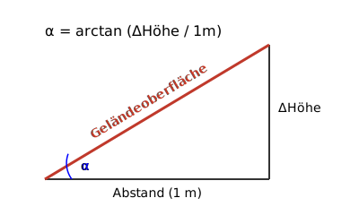
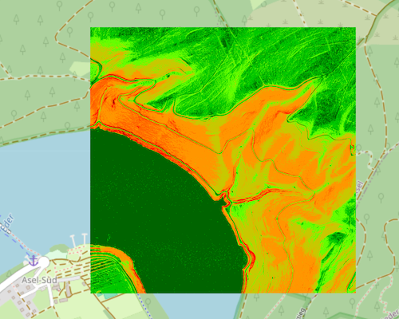

Hangneigung
Eine genaue Hangneigungskarte ist ein vielseitiges Werkzeug für Analysen und Planungen. Sie visualisiert die Steilheit des Geländes und unterstützt eine fundierte Entscheidungsfindung. Zu den wichtigsten Anwendungsbereichen gehören:
- Gefahrenanalyse: Die Karte ist entscheidend für die Bewertung von Risiken wie Hangrutschungen, Murgängen und Lawinen sowie für die Planung von Schutzmaßnahmen und die Ausweisung von Gefahrenzonen.
- Infrastrukturplanung: Sie dient der Auswahl geeigneter Standorte für Gebäude und der optimierten Planung von Verkehrswegen wie Straßen und Bahnlinien, um aufwendige Erdarbeiten zu minimieren.
- Land- und Forstwirtschaft: Landwirte und Förster nutzen die Karte zur Beurteilung der Bearbeitbarkeit von Flächen und zur Optimierung der Holzernte und von Rückewegen.
- Umwelt- und Naturschutz: Die Hangneigung ist ein wichtiger Faktor für die Biotopkartierung, die Bewertung von Habitaten und die Planung von Renaturierungsmaßnahmen.
- Freizeit und Tourismus: Sie ermöglicht die Planung von Wander- und Radwegen mit angepassten Schwierigkeitsgraden und hilft bei der Routenwahl für Outdoor-Sportarten.
Höhendifferenz zwischen benachbarten Punkten und deren Winkel
Im DGM1 beträgt der horizontale Abstand zwischen einem Gitterpunkt und seinen direkten (horizontalen und vertikalen) Nachbarn konstant 1 Meter. Für diagonale Nachbarpunkte beträgt der Abstand ca. 1.41 Meter. Aus dem Höhenunterschied zu einem direkten Nachbarpunkt lässt sich der Steigungs- oder Gefällewinkel (α) berechnen: α = arctan (ΔHöhe / 1m)
Veranschaulichung Steigungswinkel.
Die prozentuale Steigung gibt das Verhältnis des Höhenunterschieds zur horizontalen Strecke in Prozent an. Sie wird berechnet, indem der Höhenunterschied durch die horizontale Strecke geteilt und das Ergebnis mit 100 multipliziert wird. Bei einem horizontalen Abstand von 1 Meter (100 cm) zwischen direkten Nachbarpunkten entspricht ein Höhenunterschied von beispielsweise 10 cm einer prozentualen Steigung von 10 %. Ein Höhenunterschied von 100 cm auf 100 cm horizontaler Strecke entspricht einer Steigung von 100 %, was einem Winkel von 45° entspricht.
| ΔHöhe | Winkel α | Prozentuale Steigung |
|---|---|---|
| 10 cm | 5.71° | 10 % |
| 20 cm | 11.31° | 20 % |
| 30 cm | 16.70° | 30 % |
| 40 cm | 21.80° | 40 % |
| 50 cm | 26.57° | 50 % |
| 100 cm | 45.00° | 100 % |
| 200 cm | 63.43° | 200 % |
| 300 cm | 71.57° | 300 % |
| 400 cm | 75.96° | 400 % |
| 500 cm | 78.69° | 500 % |
Winkelbereich zu Farbe
Aus den Höheninformationen werden Hangneigungswinkel in Dezimalgrad (mit Nachkommastellen) errechnet. Zusätzlich definiert der Benutzer eine Farbsteuerdatei für Winkelbereiche und Farben. Welche Farben und Winkelbereiche sinnvoll sind, ist vom jeweiligen Anwendungsfall abhängig. Soll ein Winkelbereich gar nicht dargestellt werden, wählt man eine volltransparente Farbe.
Beispiel
| Winkel° | RGBA | Farbe | Farbname | Bemerkung |
|---|---|---|---|---|
| 0 | 0 100 0 255 |
|
Dunkelgrün | Von 0° bis <5°. |
| 5 | 0 200 0 255 |
|
Mittelgrün | Von 5° bis <10°. |
| 10 | 100 255 0 255 |
|
Hellgrün | Von 10° bis <20°. |
| 20 | 200 200 0 255 |
|
Gelbgrün | Von 20° bis <30°. |
| 30 | 255 150 0 255 |
|
Orange | Von 30° bis <40°. |
| 40 | 255 100 0 255 |
|
Dunkelorange | Von 40° bis <45°. |
| 45 | 255 0 0 255 |
|
Rot | Von 45° bis <60°. |
| 60 | 150 0 0 255 |
|
Dunkelrot | Von 60° bis <90°. |
| 90 | 0 0 0 255 |
|
Schwarz | Ab 90° und darüber hinaus. |
| nv | 0 0 0 0 |
|
Transparent | Sonderbehandlung für "No Value". |
Erläuterungen:
- Flache Bereiche (0° bis <20°) , die typischerweise leicht begehbar sind und geringe Erosionsgefahr aufweisen, werden in verschiedenen Grüntönen abgebildet.
- Steilere Bereiche (<40°) werden Gelbgrün und Orange dargestellt.
- Sehr steile Bereiche (40° bis <60°) weisen auf anspruchsvolles Gelände hin und werden in warmen Orange- und Rottönen dargestellt, um auf erhöhte Schwierigkeit oder potenzielle Gefahren wie Steinschlag hinzuweisen.
- Extrem steile Bereiche (<90°) werden Dunkelrot dargestellt.
- Bereiche mit Winkeln >90° (falls vorhanden) werden Schwarz dargestellt.
- Bereiche ohne Daten (nv) werden transparent dargestellt.
Schummerung versus Hangneigung

Schummerung für eine Datenkachel am Edersee (Hessen).
Hangneigung für eine Datenkachel am Edersee (Hessen).
Dienst Kolorierung
Über den Dienst Kolorierung können Farbsteuerdateien definiert, eingelesen, editiert und gespeichert werden.